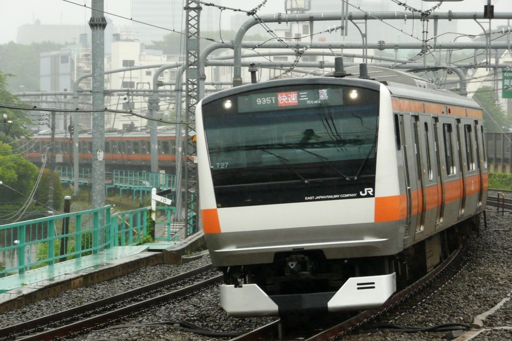
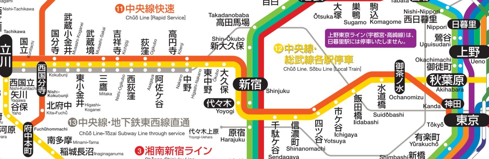

吉祥寺散歩
～井の頭公園散策～
11/22 2020
カテゴリー：サークル長の自主練
 三鷹市・武蔵野市 井の頭恩賜公園
三鷹市・武蔵野市 井の頭恩賜公園
昨今の新型コロナウイルス感染症により、依然として本サークルは活動は制限されていますので、個人的に散歩をしてきました。その時巡ったところや名所をご紹介できればなと思います。
さて、夏休み期間は西日本に行く機会があり、私の自主練先も大阪や神戸、福岡と普通のサークル活動で行くようなところではありませんでしたが、今回は実際にサークルで散歩をしたことがある吉祥寺『井の頭恩賜公園』です！ 私の家からも近く、ちょっと疲れた時にふらっと行ける場所でもあります。都会でとてもオアシスを感じます！（23区じゃないから都会じゃないか？ｗ）
私が行ったのは日曜日なので、中央線快速電車ですぐにつきました。新宿を出発し、中野を出ると、次は荻窪、そして吉祥寺に停車していきます。途中の高円寺・阿佐ヶ谷・西荻窪には停車しないため、スムーズに吉祥寺に行けました。
JR中央線（快速）  JR中央線（快速）の本来あるべき路線図 
中央線沿線に住み始めて一年半経ってしまったので、慣れてしまったのですが、こうしてみるとJR中央線の車種って沢山あるんですね。快速の他に各駅停車もありますし、土休日だと、杉並三駅を通過するので、初めての方には難しいかも。でも、JR大阪駅の大阪環状線ホームに比べたら簡単かもしれません。だって、大阪駅は行先たくさんあるもん。中央線だったら、八王子や高尾行きがメインであるし、たまに立川や大月、武蔵小金井や豊田行きくらいしかない？でも、青梅線に直通する青梅行きや河辺行き、箱根ケ崎行きがあるから、やっぱりごっちゃになってしまうかな？ さらに通勤快速や中央特快の中には富士山・河口湖行きも存在するから、もうわかんなくなってしまいますね…。